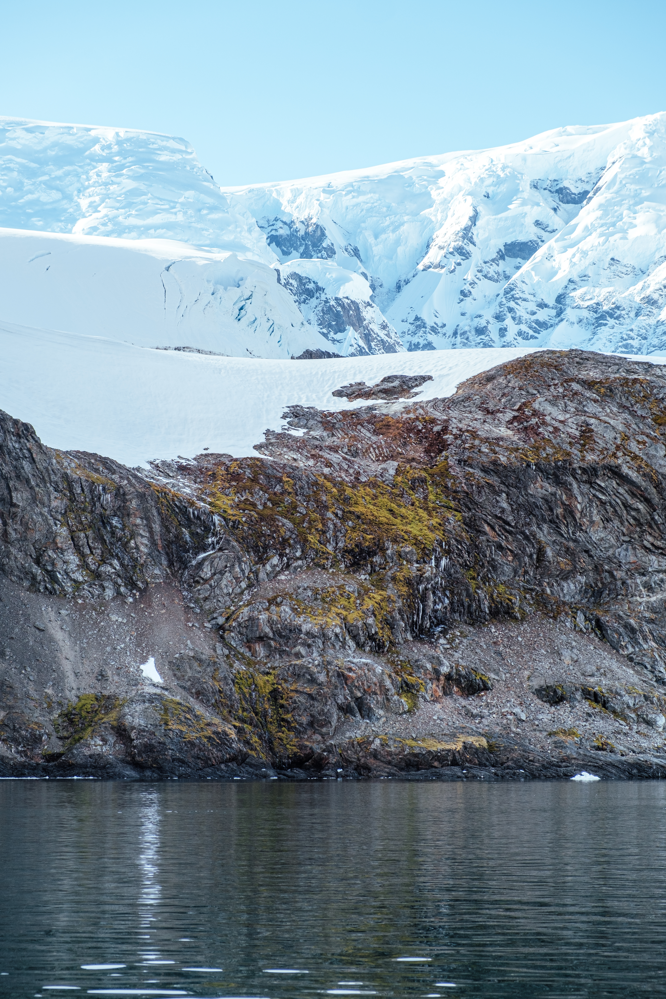

Antarctic Peninsula, South Georgia & Falkland Islands
National Geographic x Lindblad Expeditions — 2026
Visiting Scientist Program aboard NatGeo Endurance ship. I assisted with data collection for Dr Amy Heim’s project "Bipolar Exploration of the Bryosphere", a study examining how climate change is reshaping moss‑dominated ecosystems and the microbial communities that sustain them across the polar regions.
